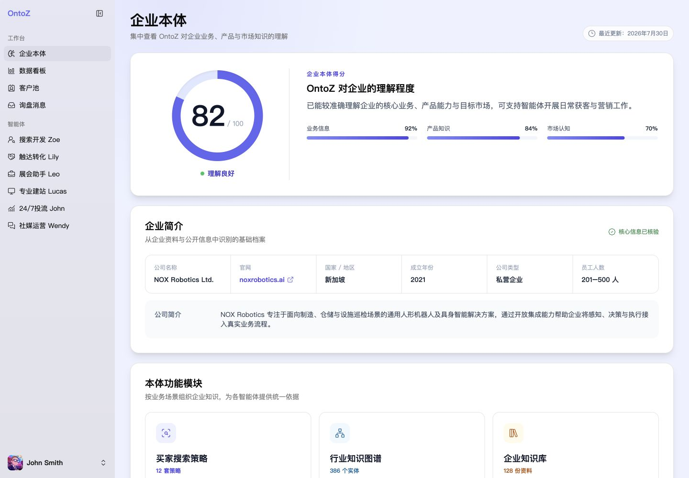
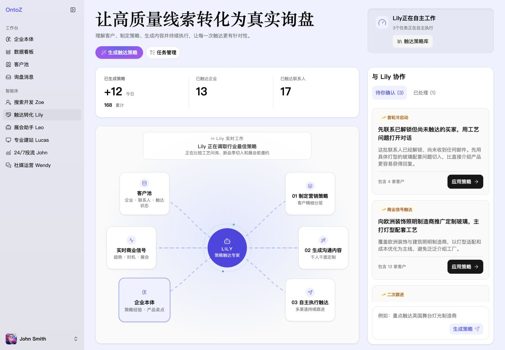
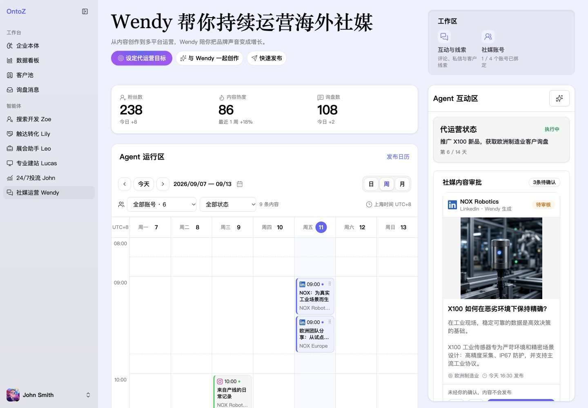
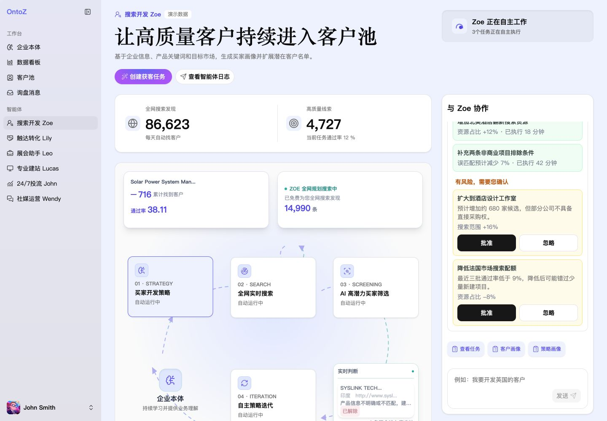
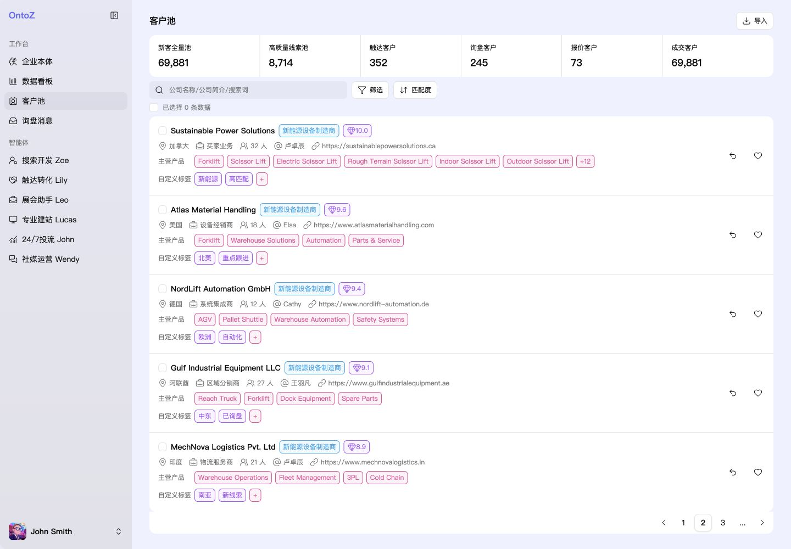
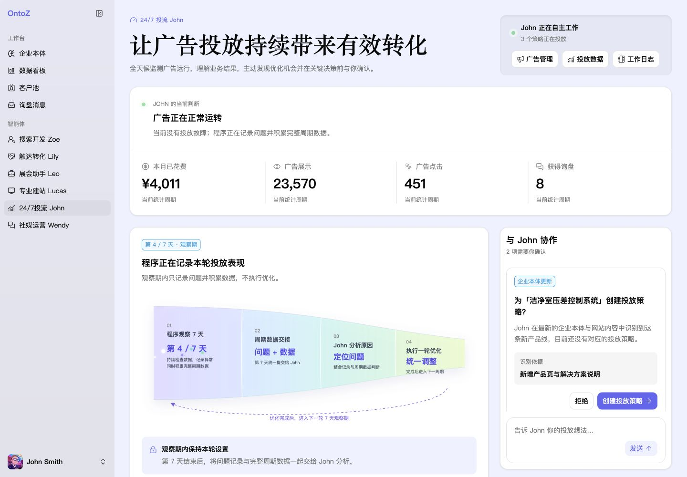
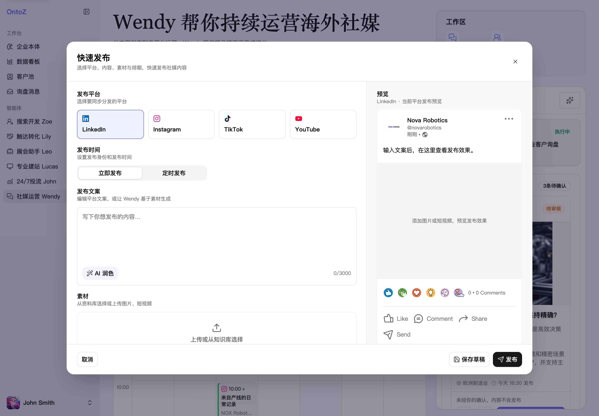
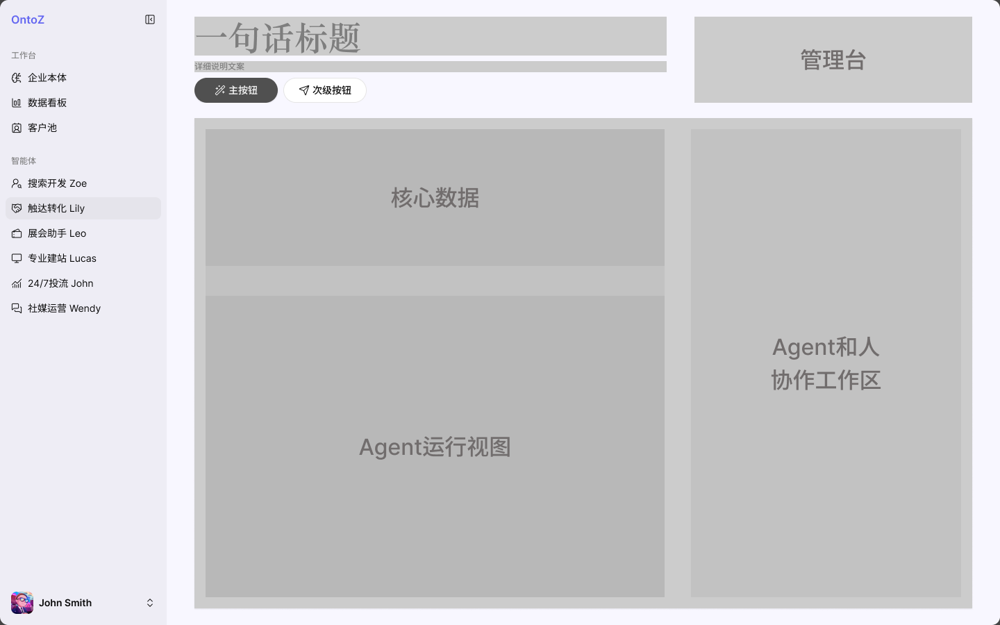

老板 外贸负责人
希望增加订单 同时控制团队成本
关注有效询盘、客户转化与团队效率；痛点是优秀业务员难复制、新人培养慢、跟进进展不透明。
设计关注：业务进展可见，关键决策可控。
从理解业务 定义问题 到与 AI 协作快速原型 再到方案落地与平台体验的系统性建设






从外贸团队的业务目标出发 理解谁在做决策 谁在执行 以及 AI 应该在哪些环节创造价值
OntoZ 面向中国 B2B 出海中小企业，探索通过 AI 员工协助团队完成获客、触达与运营。这类企业拥有供应链和产品优势，却常受限于海外获客能力与专业外贸人力。销售周期长、多语言沟通频繁，客户信息又分散在 B2B 平台、邮件、WhatsApp 与表格中，持续跟进需要大量人工投入。
作为 AI 设计师，我关注如何把 AI 能力嵌入真实业务流程：帮助团队识别值得跟进的客户、及时响应需求，并让负责人掌握进展与关键决策。
基于案头调研，我将目标用户聚焦于拥有供应链优势、希望拓展海外市场的成长型企业。典型外贸团队约 2–20 人，已尝试用 AI 写信、翻译或背调，但业务流程仍依赖人工串联。
希望增加订单 同时控制团队成本
关注有效询盘、客户转化与团队效率；痛点是优秀业务员难复制、新人培养慢、跟进进展不透明。
希望把更多时间投入客户沟通与成交
每天在客户背调、开发信、询盘回复与持续跟进之间切换；信息整理耗时，客户优先级难判断。
希望持续获得高质量潜在客户
负责市场研究、内容、社媒与投放；工具分散，多语言内容和多渠道运营消耗大量精力。
有产品与供应链 希望快速建立外贸能力
缺少海外市场经验、语言能力与成熟销售流程；面对复杂工具，不知道从哪里开始。
设计面向企业的 Agent，我首先要回答：当用户已经可以使用通用 Agent，为什么还需要我们的产品？我给出的答案是：企业级上下文、场景化、自推动任务执行。让 AI 理解企业，把能力落到具体业务，并主动提出可执行的下一步。
每一次任务 都建立在对企业的持续理解之上
通过企业本体，将客户主动上传的资料与任务执行产生的数据，沉淀为结构化、相互关联的业务上下文。客户画像、行业认知、公司品牌、产品信息与成交记录持续积累，为下一次任务提供依据。
我希望客户在产品内完成从任务到结果的闭环，让业务经验能够积累和复用，减少反复补充背景的成本。
让企业资料可沉淀、业务关系可关联、任务经验可复用。
从具体业务场景出发 让用户知道能做什么 为什么付费
将获客、触达、社媒运营与投放等任务组织成清晰的场景入口。用户可以根据业务需要选择能力、按需付费，并明确任务范围与预期产出，减少无效探索带来的 Token 消耗。
对产品而言，明确的场景也意味着更有针对性的策略与交付标准，减少需求不断扩展带来的流程混乱和服务成本。
明确每个场景的目标、输入、产出与执行边界。
让用户判断策略 让 Agent 推动下一步
外贸客户拥有行业经验，却未必擅长把业务想法转化为清晰的提示词、工具配置与任务步骤。仅提供一个输入框，仍然把定义任务和组织执行的负担留给了用户。
因此，产品需要结合企业上下文与业务进展，主动提出可执行、可调整的策略，说明依据与预期结果。由客户运用行业认知判断和确认，再由 Agent 推进执行、反馈结果并提出下一步优化建议。
主动提出策略 → 用户判断与确认 → 执行与反馈 → 持续优化。
让客户把精力放在业务判断上，让 Agent 承接上下文、策略与执行。
以 Wendy 为例 从功能对照 页面框架到交互原型 以快速发布满足基础需求 用 AI 创作 回复辅助与运营计划承接更深入的使用
梳理 12 款海外社媒产品，沿内容生产、审核发布、互动获客与数据复盘，寻找适合外贸小团队的能力组合。
品牌化内容生成与编辑。
启发：复用企业资料，生成后可预览、修改。Agent 发布、内容日历与人工审核。
启发：任务进展可见，发布前明确确认。统一处理评论、私信与线索。
启发：把社媒互动连接到客户跟进。Ocoya · 工作流编排 / Sprout Social · 数据洞察与复盘
复用企业资料，明确审核与执行状态，将互动中的采购意向连接到跟进，并用反馈优化下一轮内容。
将用户任务、信息层级、关键状态与确认节点整理为 AI 可以执行的说明，基于 OntoZ 现有界面搭建可体验原型，再沿具体任务路径迭代。
首页以前置的粉丝、内容热度与询盘指标提供全局概览，以发布日历呈现 Agent 的运行安排。互动区集中承接提醒、内容审批与需求反馈；代运营目标、AI 创作和快速发布提供独立入口。
创作工作室承接 AI 内容生产与多平台版本编辑，内容管理承接内容库与发布日历，互动与线索、社媒账号在各自页面展开。信息逐层披露，让用户先找到任务，再进入编辑与配置。

我将 Wendy 定位为社媒管理助手。客户首先需要建立社媒存在感，再根据使用深度逐步提升运营能力。
主动发布采用编辑与实时预览并列的工作台：填写文案、添加图片、选择平台和发布时间，再存为草稿或确认发布。草稿自动保存，AI 润色仅改写当前文案，不直接发布，也无需先制定代运营计划。
AI 创作工作室将目标、产品素材、视觉风格与生成结果组织在同一任务中，支持多平台版本的编辑和确认。持续运营则通过目标与周期、产品与受众、内容与渠道、确认执行逐步建立计划。按需选择能力，不阻断主动发布。
AI 生成与公开发布分开，用户可以预览、修改并确认内容和排期，在提高效率的同时保留品牌控制。
围绕运营目标、产品资料与视觉风格组织创作输入，生成后继续编辑内容和各平台版本。用户可以保存内容，再决定立即发布或排期，避免把生成完成等同于发布授权。
首页日历呈现发布安排，互动区承接待确认内容。创作、审批与排期各有入口，让用户知道任务进展和自己需要做的判断。
以可交互原型建立共识 在反馈中完善方案 并把单个 Agent 的设计放进平台整体体验与技术实现中推进
AI 让原型产出与验证可以更早发生。我倾向于优先搭建核心流程，快速发布为线上可交互的 Demo，让业务方和研发侧沿着同一条任务路径体验方案，尽早对齐业务目标、功能边界与关键交互。
根据反馈快速调整流程与信息结构，再逐步细化交互状态、操作反馈和 UI 视觉。通过持续体验与迭代，把讨论中的想法转化为可确认、可实现的设计细节。
OntoZ 中的 Agent 面向不同业务任务，但需要保持统一的平台体验。我关注视觉语言、组件规范与首页模块的一致性，让用户在不同 Agent 之间切换时，能够沿用熟悉的理解方式与操作习惯。
在视觉上统一色彩、字体、间距与状态表达；在组件上复用按钮、表单、卡片与反馈规则；在首页结构上，对齐业务概览、任务进展与协作入口等共性模块。在共同规范下承载各自的业务内容，并将可复用的设计持续沉淀为平台规范。
推进落地时，我会与研发共同调研技术实现方案，确认数据来源、接口能力与实现约束，结合业务优先级明确本轮范围，让设计细节与实际能力相匹配。
同时补齐产品字段及其含义、数据类型、必填规则与校验要求，明确加载、空数据、失败等状态及处理方式。将这些规则同步到原型与交付说明中，并在开发过程中持续对齐、验收与调整，推动方案成为可用的产品。
对比 Zoe、Lily、Wendy 和 Lucas 的首页，将不同业务中反复出现的信息与任务，归纳为一套共用的页面模式。
职责与操作入口、核心数据、Agent 运行视图、人机协作工作区保持清晰的位置关系；各 Agent 再按业务替换指标、任务与协作内容。



一句话标题与说明交代 Agent 的职责；主次按钮区分操作优先级，管理台集中承接管理入口。
核心数据呈现业务结果，Agent 运行视图呈现正在推进的工作。具体指标与视图形式随业务变化。
为 Agent 和人保留独立的协作工作区，承接待确认、反馈与补充信息，让用户清楚何时需要参与。
将平台里反复出现的样式、组件和交互状态整理为共同规范，让不同 Agent 的体验保持一致，也为设计与研发提供可核对的依据。